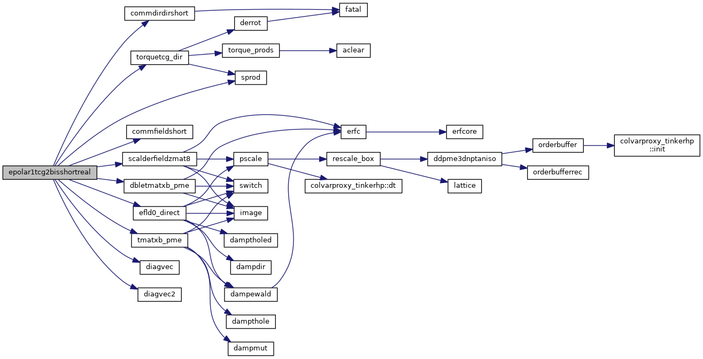
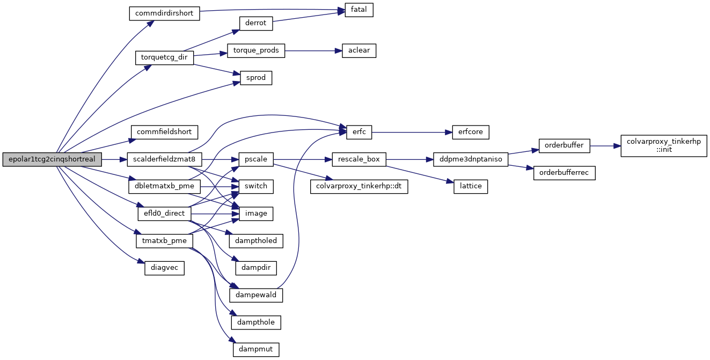
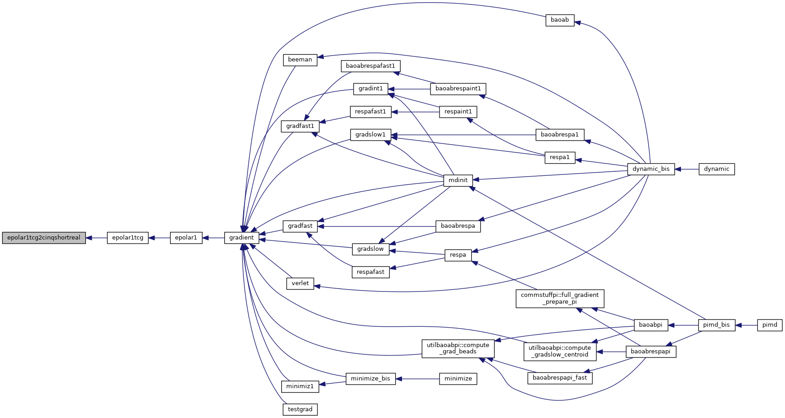
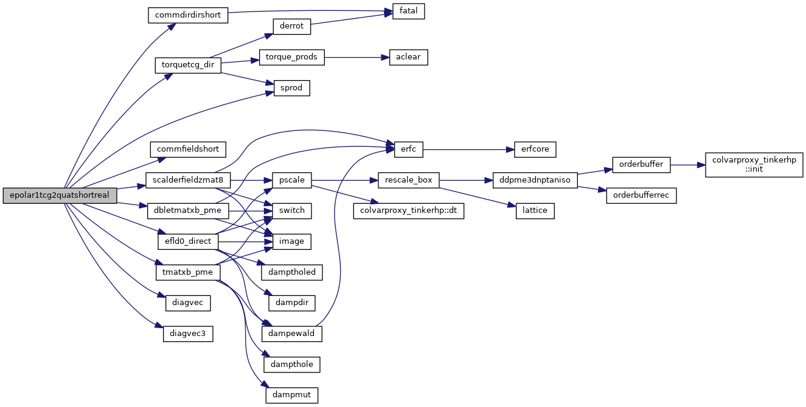
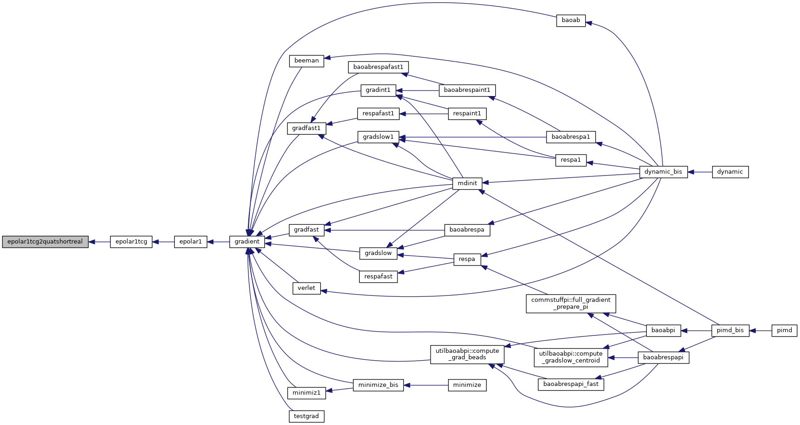
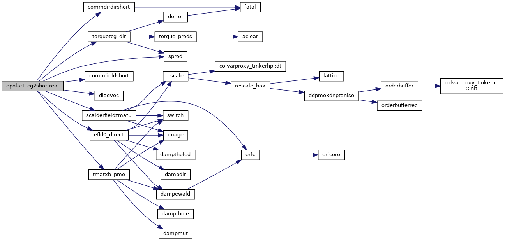
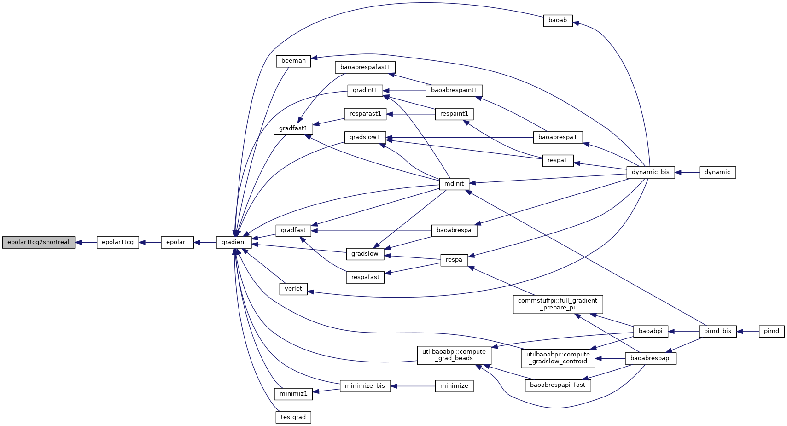
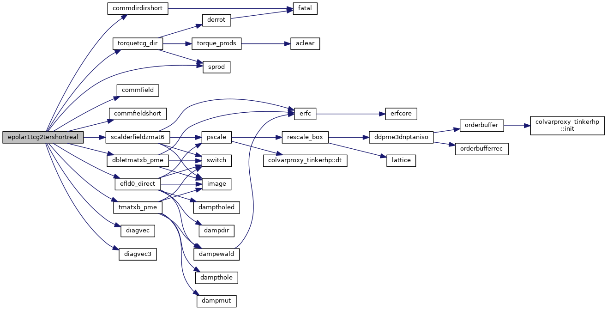
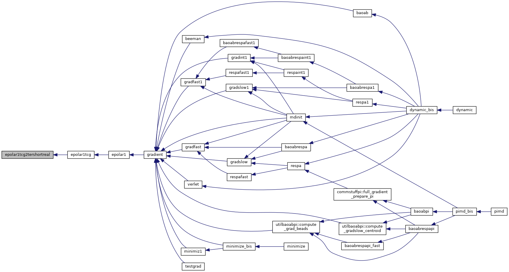

|
Tinker-HP v1.3
|
|
Tinker-HP v1.3
|
Go to the source code of this file.
Functions/Subroutines | |
| subroutine | epolar1tcg2shortreal |
| Computes TCG2 dipoles with NO refinement (except the preconditioner if "precond" is TRUE) More... | |
| subroutine | epolar1tcg2bisshortreal |
| subroutine | epolar1tcg2tershortreal |
| subroutine | epolar1tcg2quatshortreal |
| subroutine | epolar1tcg2cinqshortreal |
| subroutine epolar1tcg2bisshortreal | ( | ) |
Definition at line 270 of file epolar1tcg2shortreal.f90.
References commdirdirshort(), commfieldshort(), dbletmatxb_pme(), diagvec(), diagvec2(), efld0_direct(), scalderfieldzmat8(), sprod(), tmatxb_pme(), and torquetcg_dir().
Referenced by epolar1tcg().

| subroutine epolar1tcg2cinqshortreal | ( | ) |
Definition at line 1447 of file epolar1tcg2shortreal.f90.
References commdirdirshort(), commfieldshort(), dbletmatxb_pme(), diagvec(), efld0_direct(), scalderfieldzmat8(), sprod(), tmatxb_pme(), and torquetcg_dir().
Referenced by epolar1tcg().


| subroutine epolar1tcg2quatshortreal | ( | ) |
Definition at line 1042 of file epolar1tcg2shortreal.f90.
References commdirdirshort(), commfieldshort(), dbletmatxb_pme(), diagvec(), diagvec3(), efld0_direct(), scalderfieldzmat8(), sprod(), tmatxb_pme(), and torquetcg_dir().
Referenced by epolar1tcg().


| subroutine epolar1tcg2shortreal | ( | ) |
Computes TCG2 dipoles with NO refinement (except the preconditioner if "precond" is TRUE)
| no | params |
Definition at line 20 of file epolar1tcg2shortreal.f90.
References commdirdirshort(), commfieldshort(), diagvec(), efld0_direct(), scalderfieldzmat6(), sprod(), tmatxb_pme(), and torquetcg_dir().
Referenced by epolar1tcg().


| subroutine epolar1tcg2tershortreal | ( | ) |
Definition at line 609 of file epolar1tcg2shortreal.f90.
References commdirdirshort(), commfield(), commfieldshort(), dbletmatxb_pme(), diagvec(), diagvec3(), efld0_direct(), scalderfieldzmat6(), sprod(), tmatxb_pme(), and torquetcg_dir().
Referenced by epolar1tcg().


 1.8.5
1.8.5